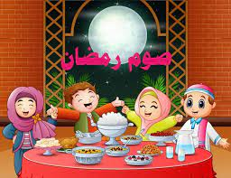

الركن الرابع :صوم رمضان

الركن الرابع صوم رمضان
رابع ركن من أركان الاسلام هو صوم رمضان حيث قال الله تعالى ( يَا أَيُّهَا الَّذِينَ آمَنُوا كُتِبَ عَلَيْكُمُ الصِّيَامُ كَمَا كُتِبَ عَلَى الَّذِينَ مِنْ قَبْلِكُمْ لَعَلَّكُمْ تَتَّقُونَ )، ويصوم المسلم شهر رمضان كل عام عن طريق الامتناع عن الطعام والشراب من الفجر حتى المغرب، وقد أمر الله تعالى لصوم رمضان حتى يشعر الأغنياء بجوع الفقراء، وليشعر المسلمين بنعم الله عليهم.